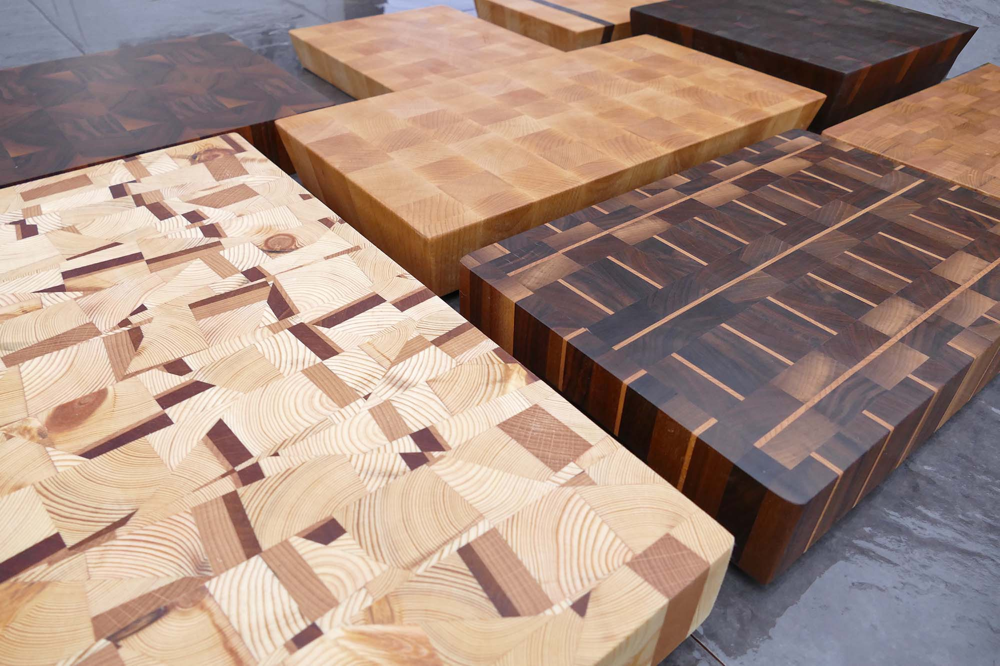

Each board is sanded smooth and then treated with food grade mineral oil (sometimes called butcher block oil), this protects and extends the life of cutting board; for extra protection and durability the board also receives a special blend of natural beeswax and oil, this protects the board from liquids.
Cutting boards should be treated monthly to help keep it in the best condition. Mineral oil is preferred as it will not go rancid over time unlike many other oils. Mineral oil should be applied on all sides to the board to prevent warping.
To keep your cutting board in the best condition I recommend a few things: Do not leave the board wet for long periods of time. Do not put the board in the dishwasher or leave to soak. Care should be taken in the re-oiling of the board monthly. (See how to oil your board)
To oil your cutting board, first wipe it clean with a damp cloth, then using mineral oil pour some on one side of the board. Using a cloth and moving in a circular motion spread the oil over the surface. Repeat this process for all sides of the board. You will notice that the oil soaks in and it may be necessary to apply multiple coats over a couple of hours.
To further the care of your board you can use a mixture of mineral oil and natural beeswax together (4:1) to create a glossy water proof finish.
Natural beeswax can be heated in a pan until liquid, mineral oil can then be mixed in. Apply in a circular motion and leave overnight, any excess can be wiped off after. Any spare mixture can be kept sealed in a container for the next use.
